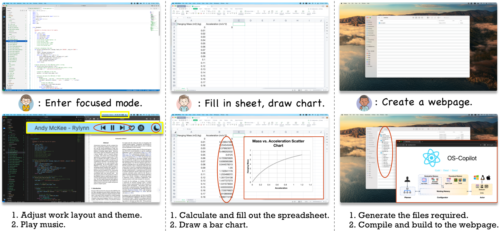

Running examples of FRIDAY when tasked with (1) preparing a focused working environment, (2) drawing a chart in Excel, and (3) creating a website for OS-Copilot.
The OS-Copilot Framework
We introduce OS-Copilot, a framework to assist building OS-level language agents, accompanied by modular implementations for each component to facilitate agent development.
Planner
The planner component will reason over user requests and decompose complex ones into simpler subtasks. Most importantly, the planner needs to comprehend the agent’s capabilities to generate plans at the correct granularity. To achieve this, it must retrieve relevant information about the agent’s capabilities, such as in-house tools and operating system information, to assist planning.
Configurator
The configurator component takes a subtask from the planner and configures it to help the actor complete the subtask. Our design of the configurator is inspired by the biological nature of the human brain, which has working, declarative, and procedural memory.
Actor
The actor comprises two stages: executable action grounding and self-criticism. In the first stage, the executor proposes an executable action (e.g., a bash command ”mkdir new folder”) based on the configuration prompt and then executes the action in the operating system (through the Bash runtime environment in this example). The critic module will then access the outcomes of the execution and formulate feedback to refine execution errors and/or effect updates to the long-term memory.
The image below shows the overview of the OS-Copilot Framework: